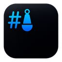
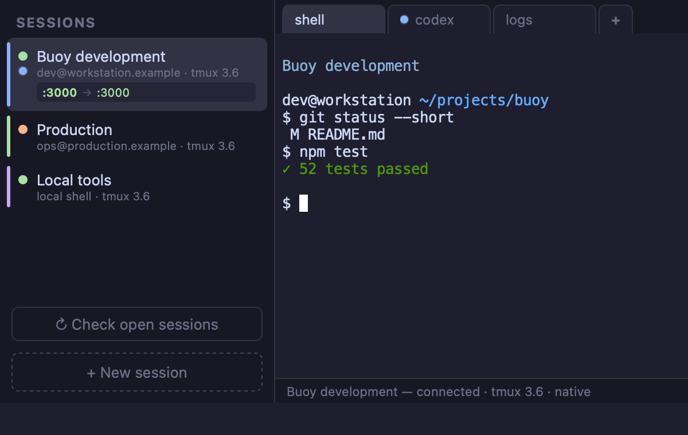

Reconnect to your work
Change networks, let your laptop sleep, or quit Buoy. Return to the same running tmux session, with its terminal buffer and active window restored.

BuoyA DESKTOP CLIENT FOR TMUX
Buoy gives local and remote tmux sessions a home on your desktop. Native tabs, reliable SSH reconnection, and a clear view of every workspace.
macOS · Windows · Linux Free & open source

BUILT AROUND YOUR WORK
Change networks, let your laptop sleep, or quit Buoy. Return to the same running tmux session, with its terminal buffer and active window restored.
See tmux windows as native tabs. Keep local and remote projects in a persistent sidebar, with connection states and unread activity in sight.
Find and import existing tmux sessions without detaching other clients. Keep your panes, key bindings, and established shell workflow.
Codex & Claude Code notifications / Remote file previews / SSH port forwarding / Session history
PICK UP WHERE YOU LEFT OFF
Choose your package from the latest GitHub release.
Download Buoy
Universal DMG · Apple Silicon & Intel
Developer ID
signed and notarized
x64 · MSI or setup executable
Currently unsigned
x86_64 · AppImage, .deb, or .rpm
BEFORE YOU CONNECT
For remote sessions, you need SSH access and tmux installed on the remote host. For durable local sessions, install tmux locally. Native tabs require tmux 3.2 or newer; older versions use a regular terminal view. Read the requirements.
Quitting Buoy or detaching leaves tmux running. Deliberately closing a session ends it and saves a recovery snapshot. Resume rebuilds shells in their last working directories; it does not restore running processes or unsaved application state. A plain local shell without tmux cannot survive quitting Buoy.
Yes. Buoy is available under the MIT license. The source, installation instructions, release notes, and issue tracker live in the buoy-tmux repository on GitHub.